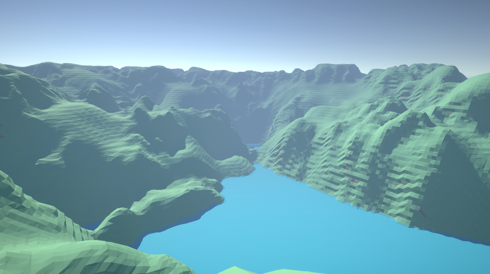

Marching Cubes
GitHubAbout
'Marching Cubes' was a course project where the goal was to learn more about procedural generation and procedural mesh-generation during runtime. The project was made in parallell/collaboration with a peer who made a similar project.
Info

Made in: 2024

Role: Programmer

Group size: 1

Time frame: 5 weeks

Engine: Unity (C#)
What I Worked On
- - Implementation of the 'Marching Cubes' algorithm
- - Procedural terrain
- - First person player controller
What I Learned
The goal of this project was primarily to learn how to marching cubes algorithm works, and how to implement it in a real game engine.
After I had researched the algorithm and implemented a basic version of it, I realised that there were some problems to fix to make the algorithm work in a realtime game.
First off, the algorithm for the generation and the marching cubes algorithm were to slow, and would cause lag spikes whenever a new chunk of terrain was generated, or whenever an old chunk was updated.
To make this problem less noticable I decided to multithread the marching cubes code using Unity's job system.
Since the chunks didn't need to be ready the very next frame, the chunks just needed to load in faster than the player could move.
Secondly, there was a big memory problem. Generating new chunk data and their meshes created a lot of garbage.
To solve this problem, I implemented object-pooling to make sure the process didn't create more garbage than needed.
There is still room for improvement on this project. There is currently no normal smoothing, which gives the terrain a very low-poly feel. Secondly, the world generation currently only consists of a perlin noise heightmap.
A lot could done here to make the terrain more interesting, such as adding continents and landmarks, or using 3D noise to create caves.
In summary, this project made me learn more about:
- - Mesh generation
- - Garbage collection management
- - Multithreading with Unity's Job System
- - Procedural terrain generation